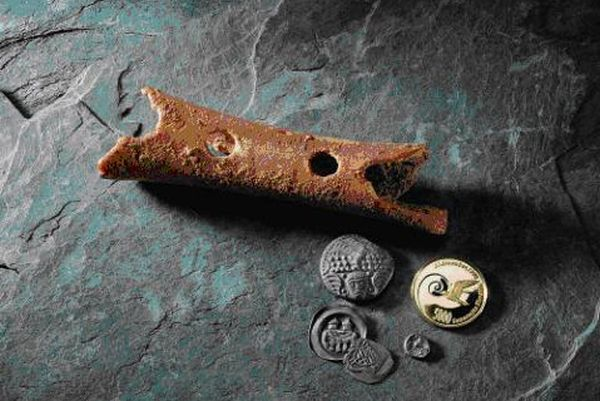
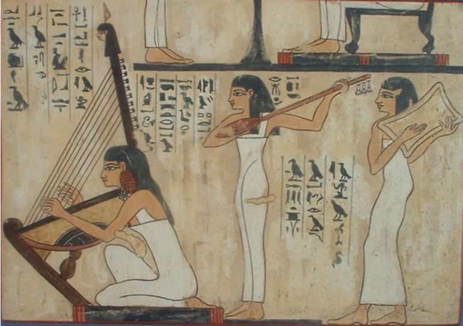
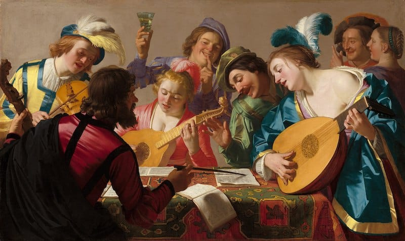
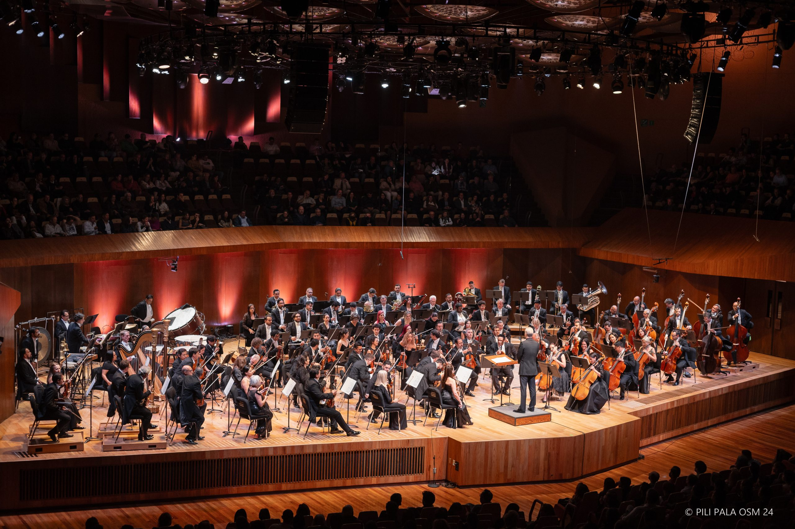

Historia de la Música
Un viaje a través del tiempo y los sonidos
Inicio
¿Que es la musica?
Su Historia
Caracteristicas
Elementos
Tipos de Musica
Generos Musicales
Ejemplos de Generos

Prehistoria
(43,000 a.C.)
Orígenes en rituales religiosos y de apareamiento
Instrumento más antiguo:
Flauta de Divje Babe
(fémur de oso)
Primera canción registrada: tablilla cuneiforme sumeria (1400 a.C.)

Antigüedad
(3000 a.C. - 476 d.C.)
Egipto: sistema de semitonos, arpas y laúdes
Grecia: primeros tratados musicales occidentales
Música vinculada a tragedias y mitología
Edad Media
(476 - 1453)
Influencia del cristianismo: canto gregoriano
Desarrollo de la polifonía
Notación musical neumática

Renacimiento
(1453 - 1600)
Nuevos estilos: música flamenca y chanson francesa
Desarrollo de la música profana
Instrumentos: clavecín, viola da gamba
Clasicismo
(1730 - 1820)
Grandes compositores: Mozart, Haydn, Beethoven
Formación de orquestas sinfónicas
Estructuras formales: sonata y sinfonía

Época Contemporánea
(1900 - Actualidad)
Ruptura con la tonalidad tradicional
Exploración de nuevos géneros: jazz, rock, electrónica
Tecnología digital: sintetizadores y producción DAW